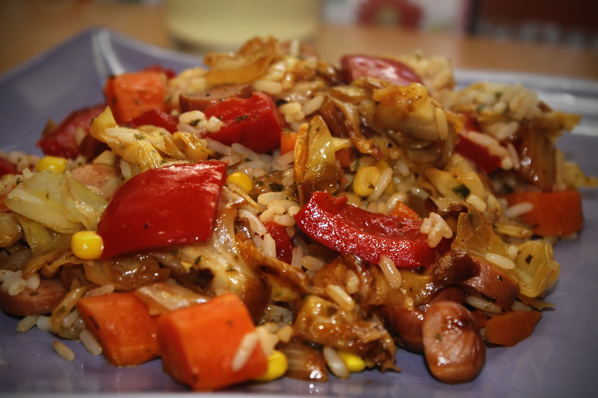

Kielbasa and Rice

Kielbasa and Rice Recipe
This is a simple fajitas recipe using only a few ingredients.
This recipe serves 2-3, takes 30 minutes to complete and requires a stove and cooking pot.
Ingredients
- 12 oz kielbasa smoked sausage
- 1 cup rice
- 2 cups chicken stock
- 1 can black-eyed peas
- 1 green onion
Steps
- Chop sausage into 1/4 inch strips. Slice green onion, separting white and green slices.
- Add sausage to cooking pot, cooking until tener. Add rice, chicken stock, black-eyed peas, and white green onion strips. Bring to a boil, then set heat to simmer and cook for 25 minutes.
- Once cooked, add remaining green onion strips to pot and mix. Meal is ready to serve.
Return to Home